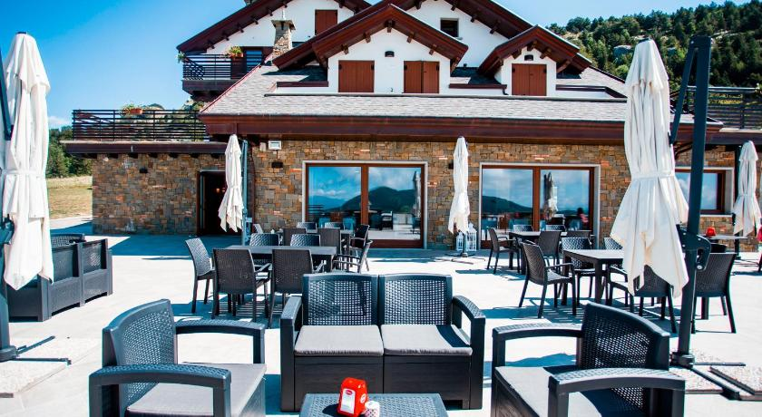

La nostra storia
Fondato nel 2024 da 4 apprendisti programmatori, il B&B Capra & Cavoli si trova a Capracotta, dove offre a ogni ospite un' esperienza unica di relax divertimento e buon cibo attraverso la collaborazione con i migliori produttori locali'
Riusciamo ad accontentare i nostri ospiti grazie al grande impegno che ci mettiamo ogni giorno, grazie all' amore per la tradizione locale e per questo magnifico paese'
Per creare il B&B abbiamo scelto un terreno che, non era altro che una scarpata priva di forma. Lavorando gomito a gomito con l' Ingegnere Renzo Piano, abbiamo capito come sfruttare le sue potenzialità al meglio. Il B&B prende il nome dal nostro attaccamento alla terra e alla natura e dal legame indistruttibile che abbiamo con contadini e allevatori del nostro territorio con i quali organizziamo settimanalmente degli eventi.'